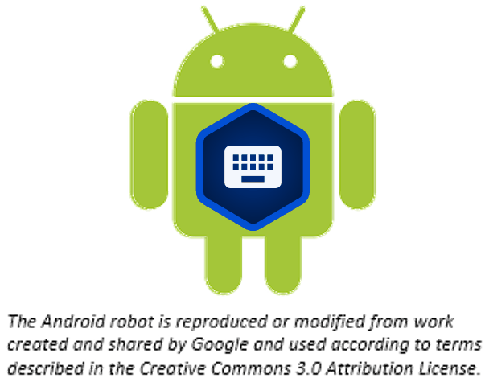

BTT Writer for Android™: Getting Started¶
{kind=link}
BTT Writer for Android is a mobile app that enables offline translating. It contains the content that needs to be translated as well as translation resources. You can share information directly from device to device, and you can upload finished content to a server where it can be digitally published.
Installation¶
In the browser on the Android device, go to this URL: https://writer.bibletranslationtools.org/download/
Tap on the white ‘Download APK’ button to download the install program to the tablet.
Navigate to the Download folder on the tablet.
Tap on the release.apk file.
Open with the Android Package Installer.
Agree to allow the program to be installed.
Tap to open the App when installed.
Tap ALLOW to enable BTT Writer to access photos, media, and files on your device.
There may be an automatic update before the BTT Writer app opens.
Opening/Reopening BTT Writer¶
{kind=link}
BTT Writer opens automatically after installing it, but if you close it, you can tap the BTT Writer icon on your tablet to reopen it.
Login Options¶
When BTT Writer first opens, you are presented with a request to create or log in to an account. There are two types of accounts that you can use:
Offline Account – user has full use of the program except for uploading to the server. You may want to start with an offline account and then switch to a server account later when you want to upload your work (the work is attached to the device, not to the account).
Server Account – user has full use of the program and can upload to the server (requires Internet connection.)
Note: The server to which you upload is determined by the Server Suite setting (see Modifying Program Settings).
If you do not want to create a new server account at this time or are not able to connect to the Internet, you can create an offline account:
On the opening screen, tap Create offline Account. The login screen opens.
Tap the Your Name or Pseudonym field.
Type your user name or pseudonym into the field, and then tap Continue. (You may use a pseudonym instead of your real name. A pseudonym is a name that cannot be traced back to you.)
Tap Continue to acknowledge the privacy notice.
If you are connected to the internet want to use an existing server account, you can tap Login to your Server account. Enter your server credentials to log in.
If you do not have a Server account, but you wish to be able to use an Internet connection to upload your work to the server, you can create a server account:
Tap Create a Server Account to create a new server user account. The Server Account Creation window opens. (This requires an Internet connection.)
Tap the Your Name or Pseudonym field and type your name or pseudonym into the field. This is the display name – the name that will be listed as a contributor to any project files on this device. (Because names are publicly available, you may prefer to use a pseudonym. Make up any pseudonym of your choice.)
Tap the Email Address line to enter your email address.
Enter your name or pseudonym in the Login name field. This is your user name that you will use to log in to the server and to the BTT Writer app. If you used a pseudonym in step (2) above, enter the same pseudonym here.
Enter a password in both fields. Tap Show Passwords at the bottom of the screen to display the passwords.
Confirm the information, and then tap Continue to begin registration.
Tap Continue to acknowledge the privacy notice.
Logging Out¶
You do not need to log out of the app before you close it. If you do not log out, when you reopen BTT Writer you will still be logged in.
However, you may want to log out to change the logged-in user. For example, you may do your work offline with an offline account, but when you want to upload your work you need to use a server account.
At any time you can perform the following steps to access the initial screen to change login or translator settings:
From the Your Translation Projects (home) screen:
Tap the 3-dot icon to invoke the options menu. This icon is at the lower left if your tablet is held horizontally, or at the lower right if the tablet is held vertically.
Tap Log out.
- OR
Tap Logout at the top right of the screen next to the user name.
How do I use BTT Writer for the first time?¶
Complete these steps to use BTT Writer for the first time:
If BTT Writer is not open, tap the BTT Writer icon on the tablet (this icon may not be on the main screen; you may need to scroll to a different screen to find it.)
Create or login to your account. See Login Options for more information.
Read and agree with each of the statements in the Terms of Use by performing the following steps:
Tap each statement.
Scroll through the text to read the entire statement.
Tap Close for each statement.
When you have read all statements, tap I Agree. (At any time you can view the License Agreement, Statement of Faith, Translation Guidelines and the Software Licenses information from the Settings Menu)
The program opens to the Your Translation Projects screen (which is the home screen).